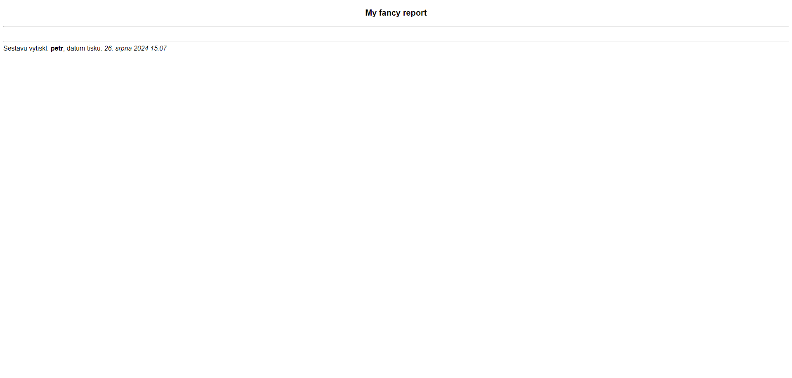
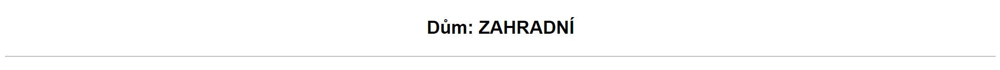

ReportView
At the heart of every report lies the ReportView class. At the high level, it facilitates putting the whole report together (so not just inidividual tables). It defines how everything is layed out, what the page title and headline are. It also takes care of extra content. Holds a reference to the table renderer template so it can indirectly affect what individual tables look like.
The class has the following definition (only properties are show, function implementations are irrelevant):
class ReportView(LoginRequiredMixin,
GetPostParametersMixin,
TemplateView):
table_renderer: str = 'snippets/report_table_renderer.html'
template_name: str = 'asbd_report_base_template.html'
title: str = 'Sestava'
tables = []
headline = 'Nepojmenovaná sestava'
extra_header: ExtraContent = None
extra_footer: ExtraContent = None
In this state, the view will not throw any exceptions complaining that it's missing properties. The report itself generated by this class will be solely a heading with the default dividers and a footer containing a singature.
A minimal configuration:

It holds the following properties:
title-
The title of the report page.
Defaults to 'Sestava'.
headline-
The headline of the report page.
Defaults to 'Nepojmenovaná sestava'

tables-
A list of
ReportTableinstances.
Each report view also needs a template and a table renderer (also just a template).
template_name-
Because reports are a highly specialized feature (mainly CSS-wise), we can't use the standard base template. Instead, a dedicated report base template is used.
Takes care of the headline, extra content, dividers, etc. and passes the list of tables to the template which renders them using a table renderer.
<!-- <html> <head> etc. --> <body> {% block header %} {% block headline %} {% if report_headline %} <div class="headline"> <p>{{ report_headline }}</p> </div> {% endif %} {% endblock %} {% resolve_extra_content extra_header %} {% endblock %} {% block content-header_divider %} <hr> {% endblock %} {% block main_content_data %} <br> {% for table in tables %} {% include table_renderer with table=table %} {% endfor %} {% endblock %} {% block content-footer_divider %} <hr> {% endblock %} {% block footer %} {% resolve_extra_content extra_footer %} {% block footer_signature %} {% include 'snippets/report_footer_signature.html' %} {% endblock %} {% endblock %} </body>Multiple blocks (injection points) are available for customization:
header-
Renders the headline and extra content.
content-header_divider-
Divider between
headerandmain_content_data.Defaults to '<hr>'.
main_content_data-
Includes the renderer template.
content-footer_divider-
Divider between
main_content_dataandfooter.Defaults to '<hr>'.
footer-
Renders the extra content and a signature.
The footer signature snippet looks like this:
Defaults to 'asbd_report_base_template.html'.
table_renderer-
As previously mentioned, it's another template. It is responsible for rendering each table.
Can also be extended to accomodate special tables.
Defaults to 'report_table_renderer.html'.
report_table_renderer.html{% load conditionals %} {% load reports %} {% if forloop.first %} {% block table_before_first %}{% endblock %} {% elif forloop.last %} {% block table_before_last %}{% endblock %} {% else %} {% block table_before_other %}{% endblock %} {% endif %} {% block table_before %} {% if table.heading %} <h4 class="table-heading">{{ table.heading }}</h4> {% endif %} <p class="table-info">{{ table.info|if_present }}</p> {% endblock %} {% block render %}{% render_report_table table %}{% endblock %} {% block table_after %} <br> {% endblock %} {% if forloop.first %} {% block table_after_first %}{% endblock %} {% elif forloop.last %} {% block table_after_last %}{% endblock %} {% else %} {% block table_after_other %}{% endblock %} {% endif %}Multiple blocks (injection points) are available for customization:
table_before_first- Content to insert before the first tabletable_before_last- Content to insert before the last tabletable_before_other- Content to insert before any other tabletable_before-
Content to insert before every table.
Renders the optional heading and info by default.
render- Holds the tag call ({% render_report_table table %}) to render the table.table_after- Content to insert after every tabletable_after_first- Content to insert after the first tabletable_after_last- Content to insert after the last tabletable_after_other- Content to insert after any other table
Extending the report template
A good example of a modified report template is the zaverecne_vyuctovani_rozklad_report_template.html. We only needed to render the tables and nothing else.
{% extends 'asbd_report_base_template.html' %}
{% block header %}{% endblock %}
{% block content-header_divider %}{% endblock %}
{% block content-footer_divider %}{% endblock %}
{% block footer %}{% endblock %}
Extending the table renderer
The purpose of the zaverecne_vyuctovani_sluzeb_report_table_renderer.html is to insert a print only page break after every table (except the last one, because the printer would just spit out an empty paper).
In this case, we couldn't have used the table_after_other block because the page break wouldn't be inserted after the first table. For that reason, we had to use the broader table_after block and manually check if the table is not the last one.
{% extends 'snippets/report_table_renderer.html' %}
{% block table_after %}
{{ block.super }}
{% if not forloop.last %}
<div class="print-page-break"></div>
{% endif %}
{% endblock %}
Extending the base view
The base ReportView may be extended to abstract out common functionality. The most common example is the DumReportView class, which is specifically tailored for reports that are in some way tied to a single Dum or Byt.
As far as the report system goes, the DumReportView just automates the process of setting a headline.
def get_report_headline(self):
if self.referral_dum:
return f'Dům: {self.referral_dum.display_altername_or_street_name}'
elif self.referral_byt:
return f'Jednotka: {self.referral_byt.name_variabilni_symbol}'
else:
return 'Název není k dispozici'
Extra content
Every report can have extra content in the header and footer. This is what the extra_header and extra_footer properties are for.
The ExtraContent base class has a singular function - render(). It is every extending class's responsibility to implement it.
TemplateContent
The TemplateContent is used to include one or more templates in the report.
class SestavaPredpisyPlatbyMesicni(DumReportView):
title = 'Měsíční rekapitulace předpisů a plateb'
extra_header = TemplateContent('snippets/report_kontrolni_sestava_period_extra_header.html',
sestava='měsíční rekapitulace předpisů a plateb (kumulovaně)')
def get_extra_header_content(self):
return TemplateContent(
'snippets/report_kontrolni_sestava_period_extra_header.html',
sestava=f'seznam odečtů měřidel pro službu {self.sluzba}'
)
StringContent
If we simply want to add text, the StringContent is perfect tool for the job. By default all lines suppplied are concatenated and separated by a newline character (\n), which is automatically translated to a <br> tag.
The rendered string is not marked safe by default, so a safe parameter needs to be set to True.